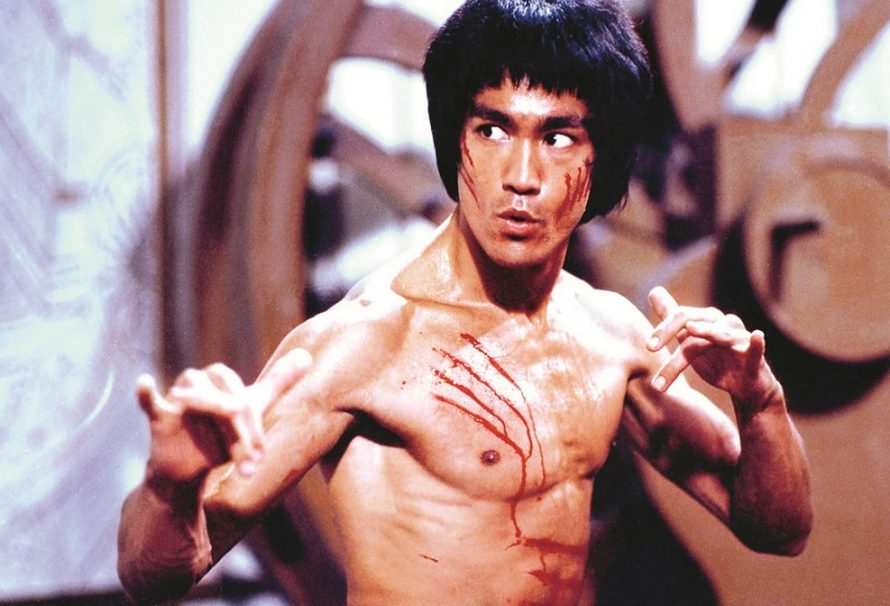

BIOGRAFIA
Lee Jun-fan (chinês tradicional: 李振藩; São Francisco, 27 de novembro de 1940 – Kowloon, 20 de julho de 1973), conhecido mundialmente como Bruce Lee, foi um artista marcial, ator, diretor de cinema, produtor cinematográfico, roteirista, instrutor de artes marciais, filósofo e autor sino-americano.[6] Ele foi o fundador do Jeet Kune Do, uma filosofia híbrida de artes marciais derivada de diferentes disciplinas de combate, que, muitas vezes, é creditada por pavimentar o caminho para as Artes Marciais Mistas (do inglês, MMA: Mixed Martial Arts). Lee é considerado por comentaristas/críticos, pela mídia e por outros artistas marciais o mais influente artista marcial de todos os tempos e um ícone da cultura pop do século XX, que fez a ponte entre o Oriente e o Ocidente. Ele é creditado por ter ajudado a mudar a maneira como os asiáticos eram apresentados nos filmes americanos.[7] Filho da estrela de ópera cantonesa Lee Hoi-chuen, Bruce Lee nasceu na área de Chinatown, em São Francisco, nos Estados Unidos. Seus pais eram de Hong Kong (então, colônia britânica), por isso foi criado com sua família lá, em Kowloon.[8] Ele foi apresentado à indústria cinematográfica por seu pai e apareceu em vários filmes como ator infantil. Lee mudou-se para os Estados Unidos aos 18 anos para receber seu ensino superior na Universidade de Washington em Seattle,[9] e foi nessa época que ele começou a ensinar artes marciais. Seus filmes produzidos em Hong Kong e Hollywood elevaram o tradicional filme de artes marciais a um novo nível de popularidade e aclamação, tendo despertado um grande interesse na nação chinesa, que se mantém até os dias atuais. A direção e o tom de seus filmes influenciaram e mudaram radicalmente os filmes de artes marciais e as artes marciais em geral em todo o mundo.
FILMOGRAFIA
EM AÇÃO
TRIBUTO
- Desde que alcançou o estrelato e apesar de seu precoce falecimento, Bruce Lee mantém o estatuto de maior ícone das artes marciais e bebe do néctar da imortalidade graças a uma série de iniciativas por parte do seu fã-clube, da Fundação Bruce Lee[92] e de diversas marcas de renome, como a Nokia, a Xiaomi, a Hublot, a Casio, a Nike, a ONE Championship e a Chkoudra Paris.
- Em 2008, a Nokia lançou o celular Nokia N96 Bruce Lee Limited Edition.[93] O comercial de Bruce Lee jogando tênis de mesa com nunchucks fez furor nas redes sociais.
- Em 2012, a fabricante de perfumes Chkoudra Paris, em parceria com as empresas Bruce Lee, lançou três fragrâncias: Don’t Think, Feel; Be Water; Anger Blinds.
- Em 2015, a Hublot, fabricante de relógios de luxo com sede na Suíça, assinalou o 75.° aniversário de Bruce Lee com uma coleção de edição limitada, The Hublot Spirit of Big Bang Bruce Lee.
- Em 2020, a Casio comemorou o 80.° aniversário de Bruce Lee com o lançamento do Casio G-shock MR-G Bruce Lee Collaboration Model, uma linha de relógios resistentes ao choque.